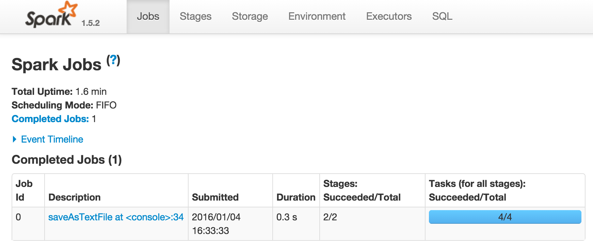
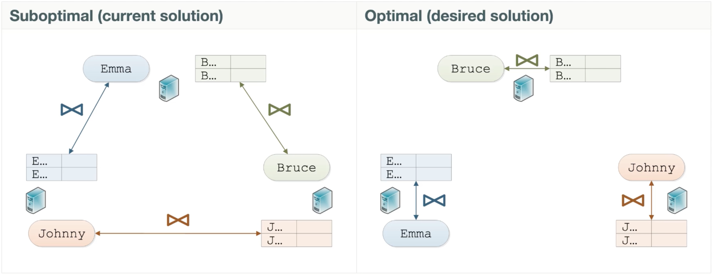

Architectural challenges of IoT and Big Data
Plus a dose of Spark for good measure :)
Created by Mark Harrison / @markglh

So what is IoT?
- The Internet of Things!
- Numerous protocols for communication
- Everything is connected, from RFID to Bluetooth to WiFi and everything in between
- How can we leverage this in new applications?
- We want to take advantage of all this available data
Many Devices
- Tens of Billions and counting
- Devices often very “thin"
- Lack processing power, memory and battery life
- Bandwidth Concerns
- Data ain't cheap!!
- Need to process as much as possible on the server
What's so difficult?
- Scaling out
- Much more difficult than scaling up
- This requires a different architecture than a typical web application
- Many different devices, different data streams, different information
- We don't want a different core application per device type
- What to do with all this data?!?
- Big data needs big processing!
Many Emerging Architectures and Stacks
- Lambda
- Kappa
- SMACK
- Zeta
- IoT-a
Architectures
So what does this look like?

First... CAP Theorem
So what does this look like?
First... CAP Theorem (cont...)
- Consistency
- Across different partitions/nodes. Every client has the same view.
- Immediate not Eventual
- Availability
- The system is always available, responses are guaranteed.
- Your queries are always executed.
- Partition Tolerance
- No single point of failure
- Can handle a node disappearing
- Replication across nodes
Lambda Architecture
Lambda Architecture (cont...)
- Originally described by Nathan Marz, creator of Apache Storm
- Claims to beat CAP theorem
- Splits the application into three parts
- Batch and Realtime layers for ingesting data
- Serving layer for querying data
- Events (incoming data) are time based
- Immutable, append only
- Series of Commands
- No updates or deletes
- Can replay the data
Lambda Architecture - Realtime Layer
- Realtime layer handles new data
- As accurate as possible, however the batch layer gives “the final answer"
- CAP complexity is isolated into this layer, which now only applies to the latest subset of data
- No need to worry about corrupting the data
Lambda Architecture - Batch Layer
- Batch layer handles historical data
- Queries in the realtime layer are recomputed after the data is persisted to the batch layer
- Allows issues in the realtime layer to be corrected
- More complex and involved computations, not time critical
Lambda Architecture - Serving Layer
- The two “views” are merged together to give a final answer by the serving layer
- Batch layer is indexed for querying
- Many different options here depending on query use cases
- Table/View per query?
Lambda Architecture - The good stuff
- Fault Tolerant against both hardware and humans
- Stores all input data unchanged, allowing for reprocessing
- We do this in our Muvr application to re-categorise exercises with new models
- Allows for a realtime view of the data, plus a more accurate higher latency view
Lambda Architecture - The bad stuff
- Assumes accurate results can’t be computed real-time
- Duplicates the transformation and computation logic (code) in both layers
- More complex to debug as a result of the two discrete implementations
- Data still not immediately consistent, hence doesn’t beat CAP theorem
Kappa Architecture

Kappa Architecture (cont...)
- Coined by Jay Creps, formally of LinkedIn
- Simplifies the Lambda architecture by removing the batch layer
- Streams are capable of persisting the historical data
- For example Kafka and Event Sourcing
- The assumption is that stream processing is powerful enough to process and transform the data real-time
- Processed data can then be stored in a table for querying
Kappa Architecture - Reprocessing
- Start a second instance of the stream processor
- Replay the data from the desired point in time
- Output to a new table
- Once complete, stop the original stream processor
- Processed data can then be stored in a table for querying
- Delete the old table
Kappa Architecture - The good stuff
- Fault Tolerant against both hardware and humans
- No need to maintain two separate code bases for the layers
- Data only reprocessed when stream processing code has changed
- Potentially reduced hosting costs
- Many of the same advantages as the Lambda architecture
Kappa Architecture - The bad stuff
- May be difficult / impossible to perform the computation on a large enough dataset
- Stream window or stateful datasource / cache
- Could introduce latency
- Often you’ll need to decide on a small “window” of historical data
- Might not be sufficient for complex Machine Learning
Quick summary
- Streams eveywhere!!
- Separating history from current (aggregated) data
- Denormalised output data
- Input format doesn’t need to match output format
- Immutability means Non-destructive writes
- Not new ideas, just a different way of thinking about them
- Enforce a company wide data format for messages early on
Muvr use case
-
Originally used classic Lambda
- Akka cluster for speed layer
- One Actor per user
- CQRS and (Akka) Event Sourcing
- Spark (ML) batch layer
- Trains the classifiers

Muvr use case - revised
-
Simply no good in production!
- Latency too high
- Too sensitive to network
- Required always on connectivity
- We had to move the speed layer onto the device
- Or rather split it between server and device
S.M.A.C.K

S.M.A.C.K
- Spark
- Fast, distributed data processing and analytics engine
- Mesos
- Cluster resource management solution providing resource isolation and sharing across distributed systems
- Akka
- Actor based JVM framework for building highly scalable, concurrent distributed message-driven applications
- Cassandra
- Highly available, distributed, scalable database designed to handle huge amounts of data across multiple data centers
- Kafka
- A high-throughput, low-latency distributed stream based messaging system designed to handle and persist events

Apache Spark
Apache Spark™ is a fast and general purpose engine for large-scale data processing, with built-in modules for streaming, SQL, machine learning and graph processing- Originally developed by Berkeley’s AMP Lab in 2009
- Open sourced as part of Berkeley Data Analytics Stack (BDAS) in 2010
- Top level apache project since 2014
Who uses Spark

Why Spark

- Contributers from over 200 companies
- One of the most active open source projects
- IBM will invest roughly $300 million over the next few years and assign 3500 people to help develop Spark
Why Spark cont...
- Easy to develop
- Flexible, composable programming model
- Provides Spark Shell
- APIs for Scala, Java and Python
- Fast and Scalable!
- Optimised storage between memory and disk
- Scales from a single laptop to a large cluster
- Up to 10x-100x faster than Hadoop
- Feature Rich
- Supports Event Streaming Applications
- Efficient support for Machine Learning
- Modular architecture
Spark usage scenarios
- On demand querying of large datasets
- Batch processing
- Machine Learning
- Stream Processing
- Data Transformations
- Graph processing
Interactive Shells
spark-shell- Extended Scala REPL with Spark imports already in scope
spark-submit- Used to submit jobs (JARs) to the cluster
spark-sql- SQL REPL
pyspark- Python shell
Spark Stack

Spark Jobs
Spark Cluster Overview

RDDs
- Immutable
- Each transformation will create a new RDD
- Lazy
- A DAG (directed acyclic graph) of computation is constructed
- The actual data is processed only when an action is invoked
- Reusable
- Can re-use RDDs by executing them multiple times
RDD Partitions
RDD Tasks
RDD Operations
RDD operations are split into two distinct categories- Transformations
- Returns a new RDD which will apply the transformation
- Can merge multiple RDDs into a new RDD (
union) map, filter, flatMap, mapPartitions, join
- Actions
- Force evaluation of the transformations
- Return a final value to the driver program or write data to an external storage system.
reduce, collect, count, saveAs**, foreach
RDD Lineage
- Each operation on an RDD creates a new RDD, with the previous operation as part of it's history.
- A lost RDD partition is reconstructed from ancestors
- By default the whole RDD lineage is executed when an action is invoked
- We can avoid this by caching (persisting) at various stages
Basic Word Count
First add the imports and create theSparkContext
import org.apache.spark.{SparkConf, SparkContext}
//Create a conf, running on two local cores
val conf = new SparkConf()
.setAppName("Simple Application")
//* will use all cores
.setMaster("local[2]")
val sc = new SparkContext(conf)
Basic Word Count (cont...)
We can now create an RDD from ourSparkContext, we can then transform the RDD and execute it
val input = sc.textFile("words.txt")
// Split up into words.
val words = input.flatMap(line => line.split(" "))
val counts = words
//pair each word with 1
.map(word => (word, 1))
//combine all matching words
.reduceByKey{case (x, y) => x + y}
// Save the word count back out to a text file.
counts.saveAsTextFile("counts.txt")
Basic Word Count (cont...)
The result is a file containing the following
...
(daughter,1)
(means,1)
(this,2)
(brother,1)
(possession,1)
(is,1)
(term,1)
...
Debugging Word Count
toDebugString lets us print out the RDD lineage for debugging
println(counts.toDebugString)
(2) ShuffledRDD[4] at reduceByKey at BasicWordCount.scala:25 []
+-(2) MapPartitionsRDD[3] at map at BasicWordCount.scala:24 []
| MapPartitionsRDD[2] at flatMap at BasicWordCount.scala:19 []
| MapPartitionsRDD[1] at textFile at BasicWordCount.scala:14 []
| words.txt HadoopRDD[0] at textFile at BasicWordCount.scala:14 []
Monitoring
http://localhost:4040- Spark’s “stages” job console. Started by the SparkContext.
http://master_host_name:4040- For Spark Standalone clusters, the Spark Master.
http://slave_host_name:7077- For Spark slave nodes
SparkContext was started

Spark Streaming Intro

- High-throughput streaming from live events
- Run event based computations and update data in real-time
Spark Streaming Intro (cont...)
- Data is grouped into batch windows for processing
- The "batch interval" is configurable
- Spark provides a high level abstraction called a discretized stream or
DStream
DStreams

- A DStream is a continuous sequence of RDDs
- Each micro batch of data is an RDD
- Each RDD has lineage and fault tolerance
- Transformations similar to those on normal RDDs are applicable
- There are many additional transformations and output operations that are only applicable to discretized streams
Basic Stream Printer
First let add the imports and create aStreamingContext
import org.apache.spark._
import org.apache.spark.rdd.RDD
import org.apache.spark.streaming._
val conf = new SparkConf()
.setAppName("Streaming Word Count")
.setMaster("local[2]")
val ssc = new StreamingContext(conf, Seconds(1))
val context = ssc.sparkContext
Basic Stream Printer (cont...)
Next we need to define the receiver, here we're using a queue
//We're using a mutable queue with 3 items
val rddQueue: Queue[RDD[String]] = Queue()
rddQueue += context.textFile("words.txt")
rddQueue += context.textFile("words2.txt")
rddQueue += context.textFile("words3.txt")
Basic Stream Printer (cont...)
Finally we can read, parse and start the stream
val streamBatches =
ssc.queueStream(rddQueue, oneAtATime = true)
val words = streamBatches.flatMap(_.split(" "))
val pairs = words.map(word => (word, 1))
val wordCounts = pairs.reduceByKey(_ + _)
//print the first 10 elements of each batch
wordCounts.print()
//Start the stream and wait for it to terminate
ssc.start()
ssc.awaitTermination()
Basic Stream Printer output
-------------------------------------------
Time: 1452128900000 ms
-------------------------------------------
(daughter,1)
(brother,4)
...
-------------------------------------------
Time: 1452128901000 ms
-------------------------------------------
(too,,1)
(Gauls,3)
...
...
Stateful Stream Printer
Lets extend this example by persisting the state between batches
val ssc = new StreamingContext(conf, Seconds(1))
// We need somewhere to store the state
// So we create a checkout directory
ssc.checkpoint("./checkpoint")
//Create a stream using a Dummy ReceiverInputDStream
val stream = ssc.receiverStream(
new DummySource(ratePerSec = 1))
// Parse the stream words and pair them up
val wordDStream =
stream.flatMap(_.split(" ")).map(x => (x, 1))
Stateful Stream Printer (cont...)
Lets extend this example by persisting the state between batches
def stateMappingFunc(batchTime: Time, key: String,
value: Option[Int], state: State[Long]
): Option[(String, Long)] = {
val currentVal = value.getOrElse(0).toLong
val aggVal = state.getOption.getOrElse(0L)
val sum = currentVal + aggVal
val output = (key, sum)
state.update(sum)
Some(output)
}
val stateSpec = StateSpec
.function(stateMappingFunc _)
.numPartitions(2)
.timeout(Seconds(60))
Stateful Stream Printer (cont...)
Finally merge the states using the function and start the stream
// apply the function returning a merged stream
val wordCountStateStream =
wordDStream.mapWithState(stateSpec)
//Print the first 10 records of the stream
wordCountStateStream.print()
ssc.start()
ssc.awaitTermination()
Stateful Stream Printer Output
Time: 1452011283000 ms
-------------------------------------------
(buy,2)
(as,7)
(as,8)
(burden,2)
....
-------------------------------------------
Time: 1452011284000 ms
-------------------------------------------
(buy,3)
(as,12)
(as,13)
(burden,3)
....
Windowed DStreams

- Can compute results based on data in multiple batches
- Known as window(ed) transformations
- Carried over multiple batches in a sliding window
- Specify the window length and sliding interval
Twitter Hashtag Counter
This time we're consuming from the live Twitter API
//Receive all tweets for the scala hashtag filters
val stream = TwitterUtils.createStream(ssc, None)
//Split tweets into words
val words = stream.flatMap(tweet =>
tweet.getText.toLowerCase.split(" "))
//Pull out the hashtags
val hashtags = words
.filter(word => word.startsWith("#"))
Twitter Hashtag Counter
We want to count all tweets in the last 60 seconds
val tagCountsOverWindow = hashtags
.map((_, 1))
//60 second window
.reduceByKeyAndWindow(_ + _, Seconds(60))
val sortedTagCounts = tagCountsOverWindow
//Swap the key and value to make sorting easier
.map { case (hashtag, count) => (count, hashtag) }
.transform(_.sortByKey(false))
//Print the Top 10
sortedTagCounts.print()
Twitter Hashtag Counter Output
-------------------------------------------
Time: 1452124409000 ms
-------------------------------------------
(7,#eurekamag)
(7,#wastehistime2016)
(6,#aldub25thweeksary)
(6,#videomtv2015)
...
-------------------------------------------
Time: 1452124411000 ms
-------------------------------------------
(8,#wastehistime2016)
(7,#eurekamag)
(6,#aldub25thweeksary)
(6,#videomtv2015)
...
Spark on Cassandra

Deployment on Cassandra

Spark Cassandra Connector
- Lets you expose Cassandra tables as Spark RDDs, write Spark RDDs to Cassandra tables, and execute CQL queries in your Spark applications
- Open sourced by Datastax, not DSE specific
- Spark partitions are constructed from data stored by Cassandra on the same node
- Partitions are not computed until an action is seen
Cassandra Aware Partitioning
Cassandra Aware Partitioning (cont...)
- Nodes in the Cassandra Cluster own part of the token range
- Spark connector keeps track of where all these live
- These ranges are then mapped to Spark partitions
- So each Spark partition knows which C* node it's data is on
- The Spark driver & executor can therefore assign the task to the appropriate node
- Processing local data is faster!!
Cassandra Stream Word Count
First we need the appropriate imports and create the context
import com.datastax.spark.connector.SomeColumns
import com.datastax.spark.connector.cql.CassandraConnector
import com.datastax.spark.connector.streaming._
import com.datastax.spark.connector._
val conf = new SparkConf()
.setAppName("Twitter HashTag Counter")
.setMaster("local[2]")
//We need to specify the Cassandra host
.set("spark.cassandra.connection.host",
"127.0.0.1")
val ssc = new StreamingContext(conf, Seconds(1))
Cassandra Stream Word Count (cont...)
Next we parse the and filter the tweets
//Receive all tweets unfiltered
val stream = TwitterUtils
.createStream(ssc, None)
//Split tweets into words
val words = stream.flatMap(tweet =>
tweet.getText.toLowerCase.split(" "))
//Pull out the hashtags and map them to a count
val hashtags = words.filter(word =>
word.startsWith("#"))
Cassandra Stream Word Count (cont...)
First we need the appropriate imports and create the context
//We need to define a case class
case class HashTagCount(
hashtag: String, count: Long)
hashtags
//This is exactly the same as the map -> reduce
.countByValue()
//map to the case class
.map(rdd => HashTagCount(rdd._1, rdd._2))
//save the stream to Cassandra
.saveToCassandra("spark", "wordcount")
Cassandra Stream Word Count output
That's all folks...
- Slides at markglh.github.io/BigData-IoT-Presentation-Slides
- Code at github.com/markglh/BigData-IoT-Presentation-Examples
- Follow me @markglh